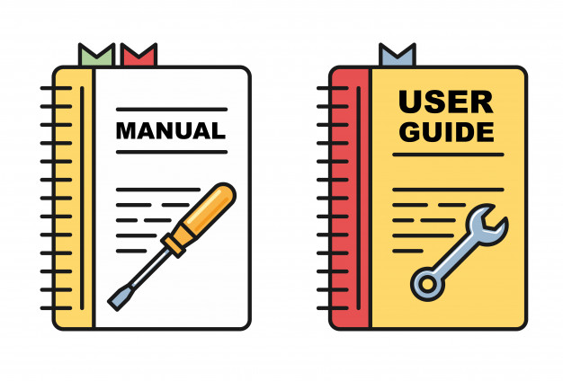

Manual de HTML
En este manual vamos a explicar de forma sencilla los principales elementos que se han dado en esta evaluación en la asignatura de Lenguajes de Marcas. Espero que las explicaciones en cada apartado sean entendibles y fáciles de comprender.
El software que se ha usado para realizar este manual ha sido Visual Studio Code. Visualmente esta página se ha basado en la página web que muestra el manual de instrucciones de Git.
